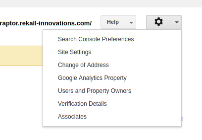
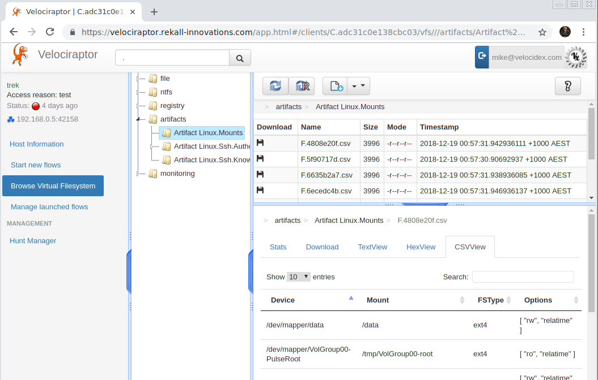

Deploying Velociraptor with OAuth SSO
In the previous post we saw how to set up Velociraptor’s GUI over SSL. This is great, but we still need to create users and assign them passwords manually. The trouble with user account management is that we can not enforce 2 factor authentication, or any password policies or any of the usual enterprise requirements for user account management. It is also difficult for users to remember yet another password for a separate system, and so might make the password easily guessable.
Most enterprise systems require an SSO mechanism to manage user accounts and passwords. Manual user account management simply does not scale!
In this post we discuss how to enable Google’s SSO authentication for Velociraptor identity management.
OAuth Identity management
Velociraptor can use Google’s oauth mechanism to verify a user’s identity. This requires a user to authenticate to Google via their usual mechanism - if their account requires 2 factor authentication, then users need to log in this way.
Once the user authenticates to Google, they are redirected back into the Velociraptor application with a token that allows the application to request information about the user (for example, the username or email address).
Note
OAuth is an authentication protocol. This means Velociraptor can be pretty confident the user is who they claim they are. This does not automatically grant them access to the application! A Velociraptor administrator must still manually grant them access before a user may log in.
Before we can use Google for Authentication, we need to register our Velociraptor deployment as an OAuth App with Google. Unfortunately Google is not known for having intuitive and easy to follow processes so actually doing this is complicated and bounces through many seemingly unrelated Google products and services. This post attempts to document this process at it exists in this time.
For our example we assume that our server is located at https://velociraptor.rekall-innovations.com as we continue on from our example in the last post (i.e. it is already configured to use SSL).
Registering Velociraptor as an OAuth application
The first step is to register Velociraptor as an OAuth app. We do this by accessing the Google cloud console at https://console.cloud.google.com . You will need to set up a cloud account first and create a cloud project. Although in this example we do not necessarily need to host our application on Google cloud or have anything to do with Google cloud, OAuth seems to exist within the Google cloud product.
Our ultimate goal is to obtain OAuth credentials to give our Velociraptor app, but we have to have a few things set up first. The cloud console is fairly confusing so I usually use the search feature to find exactly what I need. Searching for “oauth” at the search bar indicates that it is under “APIs and Services”.
We need to set up the OAuth consent screen first - in which we give our application a name to be presented to the user by the OAuth flow:

Further down we need to provide an authorized domain

In order to add an Authorized domain we need to verify it. Google’s help pages explain it further:
And this links to https://www.google.com/webmasters/tools/home which again seems completely unrelated to OAuth, Velociraptor or even a web app (the web masters product is supposed to help sites increase their search presence).
Within this product we now need to “Add a property”:
Hidden within the settings menu there is an option “Verification Details” which allows you to verify that you own the domain. If you purchased your domain from Google Domains then it should already be verified - otherwise you can set some TXT records to prove you own the domain.
After all this we can go back to the cloud console and Create Credentials/OAuth client ID:
Now select “Web App” and we must set the “Authorized redirect URIs” to https://velociraptor.rekall-innovations.com/auth/google/callback - This is the URL that successful OAuth authentication will direct to. Velociraptor accepts this redirect and uses it to log the user on.

Note
The UI is a bit confusing here - you must press enter after typing the redirect URL to have it registered before you hit Create otherwise it misses that you typed it completely. I spent some time stumped on this UI bug.
If all goes well the Google cloud console will give us a client ID and a client secret. We can then copy those into the Velociraptor configuration file under the GUI section:
GUI:
google_oauth_client_id: 1234xxxxxx.apps.googleusercontent.com
google_oauth_client_secret: qsadlkjhdaslkjasd
public_url: https://velociraptor.rekall-innovations.com/
logging:
output_directory: /var/log/velociraptor/
separate_logs_per_component: true
In the above config we also enabled logging (which is important for a secure application!). The separate_logs_per_component option will create a separate log file for the GUI, Frontend as well as important Audit related events.
Now we can start the Velociraptor frontend:
$ velociraptor --config server.config.yaml frontend
Connecting using the browser goes through the familiar OAuth flow and arrives at this Velociraptor screen:

The OAuth flow ensures the user’s identity is correct but does not give them permission to log into Velociraptor. Note that having an OAuth enabled application on the web allows anyone with a Google identity to authenticate to the application but the user is still required to be authorized. We can see the following in the Audit logs:
{
"level": "error",
"method": "GET",
"msg": "User rejected by GUI",
"remote": "192.168.0.10:40570",
"time": "2018-12-21T18:17:47+10:00",
"user": "mike@velocidex.com"
}
In order to authorize the user we must explicitly add them using the velociraptor admin tool:
$ velociraptor --config ~/server.config.yaml user add mike@velocidex.com
Authentication will occur via Google - therefore no password needs to be set.
Note that this time, Velociraptor does not ask for a password at all, since authentication occurs using Google’s SSO. If we hit refresh in the browser we can now see the Velociraptor application:
We can see that the logged in user is authenticated by Google, and we can also see their Google avatar at the top right for some more eye candy :-).
Thanks
Shouts to the folks from Klein & Co who sponsored this exciting feature!.